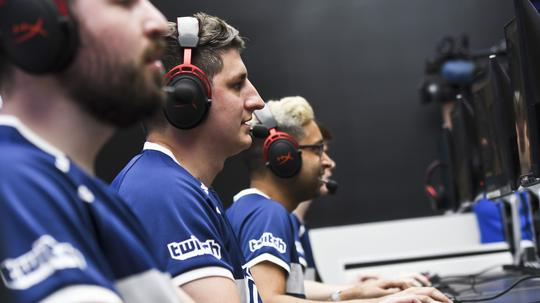
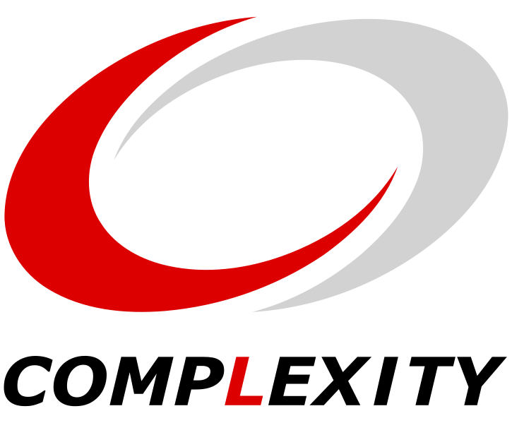

Desafiamos las probabilidades con pasión y despejamos estereotipos con integridad. Somos intrépidos, aventureros, desafiantes e imparables. Somos los pioneros del futuro. Somos el futuro que les aterra. Somos la ola de la que no pueden escapar. Pertecemos a una generación compleja criada y nutrida por el Juego. Existimos para los Jugadores. Los fanáticos. Los innovadores. Los rebeldes. Los excluidos. Este es nuestro movimiento. Nuestra cultura. Nuestro tiempo.
¿Qué es ?
Complexity Gaming es una organización de deportes electrónicos de renombre mundial con una rica historia y una sólida presencia en la escena competitiva. Fundada en 2003, Complexity ha evolucionado para convertirse en una de las principales organizaciones de deportes electrónicos en América del Norte y más allá.
Nuestra Misión
La misión de Complexity Gaming es impulsar la excelencia en los deportes electrónicos y brindar oportunidades a jugadores talentosos. A lo largo de los años, han competido en una variedad de títulos, incluyendo Counter-Strike, Dota 2, Fortnite, y más. La organización se enorgullece de promover un entorno de juego justo y respetuoso, y sus jugadores son conocidos por su ética de trabajo y pasión por la competición.
Nuestra Historia
A lo largo de los años, el equipo de esports Complexity ha experimentado una notable evolución y crecimiento en la escena competitiva. Desde su fundación en 2003, la organización ha pasado de ser un participante destacado en títulos específicos a convertirse en una entidad multifacética que abarca una amplia gama de disciplinas de deportes electrónicos. Inicialmente conocida por su éxito en Counter-Strike, Complexity expandió sus horizontes y diversificó su cartera de equipos, compitiendo en juegos como Call of Duty, Dota 2, Hearthstone y más. Esta expansión no solo amplió la base de seguidores de Complexity, sino que también demostró su habilidad para adaptarse y sobresalir en diferentes escenarios de competencia.
